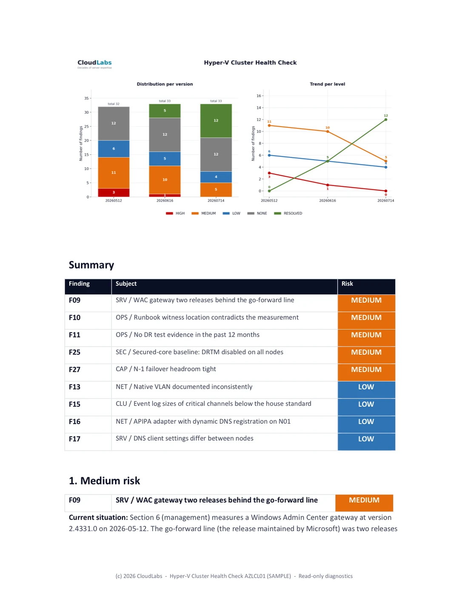

How we Follow Up on the Hyper-V Cluster Health CheckVoortgang van remediatie rapporteren: deltarapport, restrisico-rapport en een Risico-trend grafiek
A Hyper-V cluster health check that ends with a single PDF is a snapshot, and a snapshot ages the moment you start fixing things. Real remediation runs over weeks, in rounds, and the value of the engagement is decided by whether everyone can see what moved, what is still open, and which way the trend is heading. That is a reporting discipline, not a one-off document, and this article is about how to run it.
The pattern CloudLabs uses on every recurring health check has three connected building blocks: a delta report that, after a follow-up measurement, says what changed and why, a remaining-risk document that serves as the working to-do list, and a risk trend chart that shows management in one glance which way things are heading. None of them contains a customer name in this article. The mechanics are what transfer.
- Why one health check report is not enough
- The three building blocks of a progress report
- The delta report: what changed and why
- The remaining-risk document: the working list
- The risk trend chart: the one-glance picture
- The discipline behind the colours
- Follow-up measurement is what makes it objective
- Making it repeatable
1. Why one health check report is not enough
The first deliverable of a health check is a findings document: a numbered list of issues, each with a risk, evidence, and a recommendation. That document is correct on the day it ships and starts decaying immediately, because the whole point of delivering it is that someone now goes and fixes things. Two weeks later half the High Risk findings are closed, one fix turned out to have a side effect, the customer replaced a domain controller in the meantime, and the original PDF describes a cluster that no longer exists.
You can handle that in two ways. You can re-issue the whole findings document every round, which buries the reader in unchanged text and makes it hard to see what actually happened between versions. Or you can report the delta: keep the baseline as the system of record, and on each round publish a focused document that says exactly what changed, plus a slimmed view of what is still open, plus a chart that shows the trajectory. The second approach is what keeps an engagement legible over six or eight weeks of work.
The baseline findings document stays the anchor. Every later report references its finding numbers, so a reader can always trace a closure back to the original description. What changes round to round is the delta on top of it.
2. The three building blocks of a progress report
A progress round produces three things, and they are deliberately separate because they serve three different readers.
- The delta report. For the record. Per finding, it states the old level, the new level, the reason for the move, and the evidence. It includes closures, downgrades, reopenings and new findings with equal weight. This is the document an auditor or a successor engineer reads to understand the history.
- The remaining-risk document. For the team doing the work. Only the still-open findings, ordered by risk, with the resolved and not-applicable items deliberately stripped out. This is the to-do list for the next round.
- The risk trend chart. For management. A single image: count per risk level across every report version, so the direction of travel is obvious without reading a word of prose.
Splitting them matters. If you fold everything into one file, the team working the list has to wade through resolved history, and management has to read engineering detail to find the one number they care about. Three building blocks, three audiences, generated from one set of measurements.
3. The delta report: what changed and why
The delta report is built per finding, and every finding that moved gets a small block: its number, its title, the new risk badge, and a short "current situation" paragraph that cites the measurement that justifies the move. The categories of movement are fixed:
- Resolved. The root cause is fixed and the follow-up measurement confirms it is gone. Example shape: a missing cumulative update is now installed on every node and the build numbers prove it, so the finding closes.
- Lowered. The risk is reduced but not eliminated. The finding stays open at a lower level with the residual risk named explicitly.
- Reopened. A finding that was closed or low has moved back up, usually because a fix had a side effect or a benign-looking condition reappeared after maintenance. This is reported as prominently as a closure.
- New. Something the latest measurement surfaced that was not in scope or not present before.
The objectivity of the delta report lives in that "current situation" line. You do not write "patching done". You write what you measured: the validation run timestamp, the count of tests passed and the warnings that remain, and why the remaining warnings are benign or not. A reader who was not in the room can reconstruct the judgement from the evidence. That is the difference between a status update and a delta report.
An excerpt from a delta report, in the report's own voice. These findings are from the fictional Noorderlicht sample engagement (a demo environment, no customer data): two closures backed by follow-up measurement, an open finding that stayed at its level, and a new one that surfaced this round. The shape is exactly what a real delivery carries:
F01 HW / iDRAC firmware below the security-floor on all nodes HIGH -> RESOLVED
Current situation: plane D read of 16 Jun measures iDRAC9 7.10.70.00 on all
four nodes, above the 7.10.50.10 security-floor. Root cause fixed. Closed.
F09 SRV / WAC gateway two releases behind the go-forward line MEDIUM (unchanged)
Current situation: gateway still at 2.4331.0, two releases behind. Update
planned in the August window. Stays open at MEDIUM.
F33 SRV / Pending reboots on two nodes NEW -> MEDIUM
Current situation: surfaced this round on AZLCL01N02 and N04 after the June
patch pass; not present at baseline. New finding, opened at MEDIUM.
F07 HW / PSU power feed B dead on AZLCL01N03 MEDIUM -> RESOLVED
Current situation: both feeds measured live on the iDRAC of N03 (PSU1 and
PSU2 each about 210 W); redundancy restored. Closed.Each line carries its own justification: a closure rests on a re-measured version above the floor, an unchanged finding keeps its level with the reason it is still open, a new finding is opened at the level the measurement warrants, and a Resolved is only granted when the thing is measured gone rather than merely deployed. Read together they let a reviewer audit every level change without attending a single meeting.

4. The remaining-risk document: the working list
The remaining-risk document is the delta report's opposite in spirit. The delta report is about history and is comprehensive. The remaining-risk document is about the present and is ruthless: it contains only the findings that are still open, ordered High then Medium then Low, and it deliberately drops everything that is resolved or not applicable, because a to-do list that includes finished work is noise.
It is the document the customer's team actually opens during the next maintenance window. Each open finding carries its current measured numbers, not the baseline numbers, so a finding that was lowered from High to Medium shows the Medium-level reality and not the original alarm. Where a finding is partly resolved, for example a storage imbalance that is fixed on most volumes but not all, the document shows the per-item status so the remaining work is visible at the granularity of the work, not the granularity of the finding.
Putting the trend chart at the top of this document, before the open findings, gives the reader the context before the detail: here is where we are, here is what is left. It is a small thing and it changes how the document reads.

If your last health check was a single PDF and the remediation since then lives in someone's head and a spreadsheet, you have no defensible picture of whether the cluster got better or just busier.
A CloudLabs Hyper-V Cluster Health Check is structured as rounds with a delta report and a trend chart, so progress is measured, not asserted.
Schedule a Health Check intro call →5. The risk trend chart: the one-glance picture
The chart is the piece management remembers. It plots the count of findings per risk level across every report version, as a stacked bar per version with a trend line per level on top. One look answers the only two questions leadership asks: is High Risk going to zero, and is anything creeping back up.
The chart below is from the fictional Noorderlicht sample engagement, three measurement rounds across a multi-week engagement. Click the chart to enlarge it:

The same numbers in a table, for screen readers and quick reference:
| Risk | Baseline | Round 1 | Round 2 |
|---|---|---|---|
| HIGH | 3 | 1 | 0 |
| MEDIUM | 11 | 10 | 5 |
| LOW | 6 | 5 | 4 |
| NONE | 12 | 12 | 12 |
| RESOLVED | 0 | 5 | 12 |
Three things in that table are worth saying out loud. First, High goes to zero across the three rounds, which is the headline management asks for, but it does not get there by findings vanishing: they move to Resolved and stay countable. Second, the Resolved count is its own column and only grows (0, 5, 12), because a finding that is genuinely fixed should never silently leave the report; keeping it visible is what stops the trend from being gamed by deleting closed items. Third, None holds flat at 12: those are the items that were checked and found in order at baseline and stay that way, the evidence of what was verified, not silence. The total findings count barely moves (32, 33, 33) while the risk inside it drains from red to green, and that is the whole point of counting every level on every version.
Build the chart with the same risk colours used everywhere else in the reporting, so a reader who has seen one badge recognises the bar. High Risk red, Medium orange, Low blue, None grey, Resolved green. Consistency across the delta report, the remaining-risk document and the chart is what lets someone move between the three building blocks without re-learning the legend each time.
6. The discipline behind the colours
A five-level taxonomy only works if the boundaries are defended. The two that get abused are the top and the bottom of the "good news" range, so they get explicit rules.
Resolved versus Lowered. Resolved is reserved for a fixed and re-confirmed root cause. If the risk is merely contained, the finding is Lowered, not Resolved. A workload isolated behind a VLAN so that nothing reaches it any more is a real and valuable mitigation, but the underlying object still exists, so it is Low, not Resolved, until the problem is genuinely resolved. The absence of exposure from where you happen to be standing is not the same as the cause being gone. Holding that line is the single most important reporting decision in the whole engagement, because it is what stops the trend chart from flattering everyone.
Reopened versus stayed-fixed. A finding that comes back is reopened visibly. After a maintenance round it is common for a benign-looking condition to reappear on every node, and the right move is to report it back into the list at the appropriate level with the explanation, not to quietly leave it closed because it was closed last round. The reader trusts the trend precisely because regressions show up in it.
7. Follow-up measurement is what makes it objective
Every round starts the same way it did at baseline: the same or an improved read-only inventory script, run from the customer's own management server, plus a fresh cluster validation. Nothing in the progress report comes from a meeting or a recollection. A finding only moves on the strength of a measurement taken after the change, and the report cites that measurement by its run: the inventory file, the validation timestamp, the specific counter.
This also catches the moving parts that a status-update style of reporting misses. A domain controller replaced mid-engagement, a node that briefly fell out of the management subnet, a validation warning that was measured before the patch reboots and is stale by the next round. Because the measurement is re-run rather than remembered, the report describes the cluster as it is on the day of the follow-up measurement, not as it was when the work was scheduled.
The mechanics of that read-only inventory and the pre-flight that keeps it self-documenting are covered in From Health Check to Patch Night: The Method at Work. The progress reporting in this article is the layer that sits on top of those measurements over multiple rounds.
8. Making it repeatable
The reason to standardise the three building blocks is that the next round, and the next engagement, should not re-invent them. The pattern that holds up:
- Keep the baseline findings document as the system of record and never renumber its findings. Every later report references those numbers.
- Generate the delta report, the remaining-risk document and the trend chart from the same round of measurements, so the three can never disagree with each other.
- Use one risk taxonomy and one colour set across all three, and defend the Resolved boundary strictly.
- Put the trend chart at the top of the remaining-risk document so context precedes detail.
- Cite the run behind every level change, so the report is reconstructable by someone who was not there.
Do that and a health check stops being a PDF that ages on a shared drive and becomes a measured trajectory that anyone can read in one image and trust in the detail. That is the deliverable customers actually keep.
Schedule a Hyper-V Cluster Health Check intro call →
Frequently asked questions
Once per measurement round, which in practice means after every batch of fixes that is large enough to change the risk picture. On a typical engagement that is every few months, though the customer can ask for a higher frequency, especially when there are many issues to work through. Each round re-runs the same read-only inventory and validation, so every report is built on a fresh measurement, not on a status meeting.
Resolved means the root cause is actually fixed and measured as gone in the follow-up measurement. Lowered means the risk is reduced but the cause is still present, for example a workload isolated by VLAN instead of fully removed. Mitigation moves a finding down a level. It does not close it. Keeping that line strict is what keeps the trend chart credible.
The full report carries history, resolved items and context, which is what you want for the audit trail. The remaining-risk document carries only what is still open, ordered by risk, which is what the team actually works from in the next round. Two audiences, two documents.
Every round reports reopened and newly discovered findings alongside the resolved ones. A finding can move back up a level if a fix introduced a side effect, and that reopening is shown with the same weight as a closure. The trend chart counts every risk level on every version, so a regression is visible as a bar that grew.
Yes. The risk trend chart plots the count per risk level across every report version, as stacked bars with a trend line per level. One image shows whether High Risk is going to zero and whether anything is creeping back up. It is generated from the same numbers that drive the detailed reports.
Een Hyper-V cluster health check die eindigt met één PDF is een momentopname. En een momentopname begint te verouderen zodra je dingen gaat repareren. Het serieus aanpakken van risico's en bevindingen neemt weken in beslag en verloopt in meerdere rondes. De waarde van de opdracht wordt uiteindelijk bepaald door de vraag of iedereen kan zien wat er is veranderd, wat er nog openstaat en welke kant de trend opgaat. Dat is een rapportagediscipline, geen eenmalig document. Dit artikel gaat over hoe je die discipline toepast.
Het patroon dat CloudLabs bij elke terugkerende health check gebruikt, bestaat uit drie samenhangende bouwstenen: een deltarapport dat na een vervolgmeting laat zien wat er is veranderd en waarom, een restrisico-rapport dat als actuele to-dolijst dient, en een Risico-trend grafiek die het management in één oogopslag laat zien welke kant het opgaat. Geen van deze voorbeelden bevat in dit artikel een klantnaam. Het gaat om de werkwijze, en die is overdraagbaar.
- Waarom één health check-rapport niet genoeg is
- De drie samenhangende bouwstenen van een voortgangsrapport
- Het deltarapport: wat is er veranderd en waarom?
- Het restrisico-rapport: de werklijst
- De Risico-trend grafiek: het beeld in één oogopslag
- De discipline achter de kleuren
- Vervolgmeting maakt het objectief
- Het herhaalbaar maken
1. Waarom één health check-rapport niet genoeg is
De eerste oplevering van een health check is een document met bevindingen: een genummerde lijst met issues, elk voorzien van een risiconiveau, bewijs en een aanbeveling. Dat document klopt op de dag waarop het wordt opgeleverd en begint daarna meteen te verouderen. Dat is tenslotte precies het doel van de oplevering: iemand gaat nu dingen repareren. Twee weken later is misschien de helft van de HOOG (Risico)-bevindingen gesloten, heeft één fix een onverwachte bijwerking gehad, heeft de klant ondertussen een domain controller vervangen en beschrijft de oorspronkelijke PDF een cluster dat inmiddels niet meer bestaat. Daar kun je op twee manieren mee omgaan.
Je kunt elke ronde het volledige bevindingendocument opnieuw uitbrengen. Het nadeel is dat de lezer wordt bedolven onder ongewijzigde tekst en dat het lastig wordt om te zien wat er tussen de verschillende versies daadwerkelijk is gebeurd. Of je rapporteert de delta: je houdt de baseline als systeem van vastlegging en publiceert per ronde een gericht document dat precies beschrijft wat er is veranderd. Daar voeg je een uitgedunde weergave van de openstaande punten aan toe, plus een grafiek die het verloop laat zien. Die tweede aanpak houdt een opdracht ook na zes of acht weken werk nog leesbaar.
Het baseline-bevindingendocument blijft het anker. Elk later rapport verwijst naar de oorspronkelijke bevindingsnummers, zodat een lezer een afsluiting altijd kan terugleiden naar de oorspronkelijke beschrijving. Wat van ronde tot ronde verandert, is de delta daarbovenop.
2. De drie samenhangende bouwstenen van een voortgangsrapport
Een voortgangsronde levert drie dingen op. Ze zijn bewust van elkaar gescheiden, omdat ze drie verschillende groepen lezers bedienen.
- Het deltarapport. Voor de vastlegging. Per bevinding beschrijft het het oude niveau, het nieuwe niveau, de reden voor de verschuiving en het bewijs. Het bevat afsluitingen, verlagingen, heropeningen en nieuwe bevindingen, allemaal met hetzelfde gewicht. Dit is het document dat een auditor of een opvolgende engineer leest om de historie te begrijpen.
- Het restrisico-rapport. Voor het team dat het werk uitvoert. Alleen de nog openstaande bevindingen, geordend op risico, waarbij opgeloste en niet-van-toepassing-zijnde items bewust zijn weggelaten. Dit is de to-dolijst voor de volgende ronde.
- De Risico-trend grafiek. Voor het management. Eén beeld met het aantal bevindingen per risiconiveau over elke rapportversie, zodat de richting van de ontwikkeling duidelijk is zonder een woord proza te hoeven lezen.
Die scheiding doet ertoe. Stop je alles in één bestand, dan moet het team dat de lijst afwerkt door opgeloste historie waden. Tegelijkertijd moet het management door engineering-detail heen om dat ene getal te vinden waar het om gaat. Drie samenhangende bouwstenen, drie doelgroepen, allemaal gebaseerd op dezelfde set metingen.
3. Het deltarapport: wat is er veranderd en waarom?
Het deltarapport is opgebouwd per bevinding. Elke bevinding die is verschoven krijgt een eigen blok: het nummer, de titel, het nieuwe risiconiveau en een gedetailleerde beschrijving. Die alinea's verwijzen naar de meting die de verschuiving rechtvaardigt. De categorieën van beweging liggen vast:
- Opgelost. De root cause is gerepareerd en de vervolgmeting bevestigt dat het probleem is verdwenen. Bijvoorbeeld: een ontbrekende cumulatieve update is nu op elke node geïnstalleerd en de buildnummers bewijzen dat. De bevinding kan worden gesloten.
- Verlaagd. Het risico is verminderd, maar niet weggenomen. De bevinding blijft open op een lager niveau, waarbij het restrisico expliciet wordt benoemd.
- Heropend. Een bevinding die gesloten was of op een laag niveau stond, is weer omhooggegaan. Meestal omdat een fix een bijwerking had of omdat een onschuldig ogende conditie na onderhoud opnieuw is ontstaan. Dit wordt net zo prominent gerapporteerd als een afsluiting.
- Nieuw. Iets wat de laatste meting aan het licht heeft gebracht en wat niet in scope was of eerder nog niet aanwezig was.
De objectiviteit van het deltarapport zit in die regel met de 'huidige situatie'. Je schrijft niet: 'patchen klaar'. Je schrijft wat je daadwerkelijk hebt gemeten: het tijdstip van de validation run, het aantal geslaagde tests, de waarschuwingen die nog resteren en waarom die resterende waarschuwingen wel of niet onschuldig zijn. Een lezer die er niet bij was, moet het oordeel uit het bewijs kunnen reconstrueren. Dat is het verschil tussen een statusupdate en een deltarapport.
Een geanonimiseerd fragment uit een deltarapport laat de vier soorten beweging zien in de eigen stijl van het rapport. De bevindingsnummers en beschrijvingen zijn hier generiek; de vorm is het echte werk:
F12 Cumulatieve update ontbreekt op clusternodes HOOG -> OPGELOST
Huidige situatie: juni-CU op 12 juni op alle nodes geïnstalleerd; buildnummers
na reboot geverifieerd. Root cause gefixt. Bevinding gesloten.
F08 Storage-headroom ongelijk verdeeld over de nodes HOOG -> MIDDEL
Huidige situatie: failover-headroom binnen de site hersteld (drukste node
442 -> 204 GB in gebruik); scheefstand tussen sites resteert. Risico verlaagd,
niet gesloten.
F20 CSV-eigenaarschap scheef naar één node na patchen OPGELOST -> LAAG
Huidige situatie: Cluster-Aware Updating liet de meeste CSV's bij de laatst
gepatchte node. Opnieuw verdeeld en herbevestigd; op LAAG gehouden als
terugkerende post-onderhoudscheck in plaats van gesloten.
F31 Backup-uitsluitingspad niet meer bereikbaar MIDDEL -> OPGELOST
Huidige situatie: workload gedecommissioneerd en verwijderd; herscan bevestigt
dat het pad weg is, niet slechts onbereikbaar. Gesloten.Elke regel bevat zijn eigen rechtvaardiging. Een afsluiting steunt op een geverifieerd buildnummer, een verlaging benoemt het restrisico, een heropening wordt openlijk gemeld en Opgelost wordt alleen toegekend wanneer het probleem daadwerkelijk weg is en niet alleen buiten bereik. Samen gelezen stellen deze regels een reviewer in staat om iedere niveauwijziging te auditen zonder één vergadering te hoeven bijwonen.

4. Het restrisico-rapport: de werklijst
Het restrisico-rapport is qua karakter de tegenpool van het deltarapport. Het deltarapport gaat over historie en is volledig. Het restrisico-rapport gaat over het heden en is meedogenloos: het bevat alleen de bevindingen die nog openstaan, geordend op HOOG, daarna MIDDEL en vervolgens LAAG. Alles wat is opgelost of niet van toepassing is, wordt bewust weggelaten. Een to-dolijst waar afgerond werk nog tussen staat, is ruis.
Dit is het document dat het klantteam daadwerkelijk opent tijdens het volgende maintenance window. Elke openstaande bevinding bevat de meest recente meetgegevens, niet de cijfers uit de baseline. Een bevinding die van HOOG naar MIDDEL is verlaagd, laat dus de huidige MIDDEL-werkelijkheid zien en niet het oorspronkelijke alarm. Waar een bevinding gedeeltelijk is opgelost, bijvoorbeeld een storage-scheefstand die op de meeste volumes is hersteld, maar niet op alle, toont het document de status per item. Zo blijft het resterende werk zichtbaar op het niveau waarop het daadwerkelijk moet worden uitgevoerd, en niet alleen op het niveau van de oorspronkelijke bevinding.
De trend chart bovenaan dit document plaatsen, vóór de openstaande bevindingen, geeft de lezer eerst de context en daarna het detail: hier staan we, dit is wat er nog resteert. Het is een klein verschil, maar het verandert de manier waarop het document wordt gelezen.

Was je laatste health check één PDF en leeft de remediatie sindsdien in iemands hoofd en een spreadsheet, dan heb je geen verdedigbaar beeld van de vraag of het cluster beter is geworden of alleen maar drukker.
Een CloudLabs Hyper-V Cluster Health Check is daarom opgebouwd uit rondes met een deltarapport en een trend chart, zodat voortgang wordt gemeten en niet alleen wordt beweerd.
Plan een kennismaking voor een Health Check →5. De Risico-trend grafiek: het beeld in één oogopslag
De grafiek is het onderdeel dat het management onthoudt. Hij toont het aantal bevindingen per risiconiveau over iedere rapportversie: als een gestapelde balk per versie, met daarboven een trendlijn per niveau. Eén blik beantwoordt de twee vragen die het management uiteindelijk stelt: gaat HOOG naar nul, en kruipt er ergens iets weer omhoog?
Onderstaande grafiek komt uit de fictieve Noorderlicht-voorbeeldopdracht, met drie meetrondes over een opdracht van meerdere weken. Klik op de grafiek om deze te vergroten:

Dezelfde cijfers in een tabel, voor schermlezers en snelle naslag:
| Ernst | Baseline | Ronde 1 | Ronde 2 |
|---|---|---|---|
| HOOG | 3 | 1 | 0 |
| MIDDEL | 11 | 10 | 5 |
| LAAG | 6 | 5 | 4 |
| GEEN | 12 | 12 | 12 |
| OPGELOST | 0 | 5 | 12 |
Drie dingen in die tabel zijn het waard om hardop te zeggen. Ten eerste gaat HOOG over de drie rondes naar nul, precies het beeld waar het management om vraagt, maar niet doordat bevindingen verdwijnen: ze gaan naar OPGELOST en blijven meetellen. Ten tweede is OPGELOST een eigen kolom die alleen maar groeit (0, 5, 12). Een bevinding die daadwerkelijk is gerepareerd, hoort nooit stilletjes uit het rapport te verdwijnen; door haar zichtbaar te houden kan de trend niet worden gemanipuleerd door gesloten items simpelweg uit de rapportage te verwijderen. Ten derde blijft GEEN vlak op 12: dat zijn de items die bij de baseline zijn gecontroleerd en in orde bevonden, en dat ook blijven, het bewijs van wat is geverifieerd en geen stilte. Het totale aantal bevindingen beweegt nauwelijks (32, 33, 33) terwijl het risico erin wegloopt van rood naar groen, en dat is precies waarom je ieder niveau in iedere versie telt.
Bouw de grafiek met dezelfde risicokleuren die je overal elders in de rapportage gebruikt, zodat een lezer die één risicolabel heeft gezien diezelfde betekenis direct in de grafiek herkent. HOOG rood, MIDDEL oranje, LAAG blauw, GEEN grijs, OPGELOST groen. Die consistentie tussen het deltarapport, het restrisico-rapport en de grafiek zorgt ervoor dat iemand tussen de drie samenhangende bouwstenen kan bewegen zonder telkens opnieuw de legenda te moeten leren.
6. De discipline achter de kleuren
Een taxonomie met vijf niveaus werkt alleen als de grenzen ervan worden bewaakt. De twee niveaus die het vaakst verkeerd worden gebruikt, zitten aan de boven- en onderkant van het 'goed nieuws'-bereik. Daarom krijgen juist die expliciete regels.
Opgelost versus Verlaagd. Opgelost is gereserveerd voor een root cause die daadwerkelijk is gerepareerd en vervolgens opnieuw is bevestigd. Is het risico alleen ingeperkt, dan is de bevinding Verlaagd, niet Opgelost. Een workload die achter een VLAN is geïsoleerd zodat er niets meer bij kan, is een echte en waardevolle risicobeperking. Maar het onderliggende object bestaat nog steeds. Daarom is het LAAG en niet Opgelost, totdat het probleem werkelijk is opgelost. Het feit dat iets vanaf de plek waar je toevallig staat niet meer bereikbaar is, betekent niet dat de oorzaak is verdwenen. Die grens bewaken is misschien wel de belangrijkste rapportagebeslissing van de hele opdracht. Het is wat voorkomt dat de trend chart iedereen een mooier beeld voorschotelt dan de werkelijkheid rechtvaardigt.
Heropend versus gefixt-gebleven. Een bevinding die terugkomt, wordt zichtbaar heropend. Na een maintenance ronde komt het regelmatig voor dat een op het eerste gezicht onschuldige issue op iedere node terugkeert. De juiste aanpak is dan om die bevinding op het passende niveau, met uitleg, opnieuw in de lijst op te nemen. Niet om haar stilletjes gesloten te laten omdat ze in de vorige ronde al was gesloten. De lezer vertrouwt de trend juist omdat regressies er ook in zichtbaar worden.
7. Vervolgmeting maakt het objectief
Elke ronde begint op dezelfde manier als de baseline: met hetzelfde of een verbeterd read-only inventarisatiescript, uitgevoerd vanaf de eigen management server van de klant, aangevuld met een nieuwe cluster-validation. Niets in het voortgangsrapport komt uit een vergadering of uit iemands geheugen. Een bevinding verandert alleen van niveau op basis van een meting die na de wijziging is uitgevoerd. Het rapport verwijst daarbij expliciet naar die meting: het inventarisatiebestand, het tijdstip van de validatie en de specifieke counter.
Dit vangt ook de bewegende delen op die een statusupdate-achtige manier van rapporteren mist. Een domain controller die halverwege de opdracht is vervangen. Een node die tijdelijk uit het management-subnet viel. Een validatiewaarschuwing die vóór de patch-reboots is gemeten en in de volgende ronde alweer verouderd blijkt. Omdat de meting opnieuw wordt uitgevoerd in plaats van onthouden, beschrijft het rapport het cluster zoals het is op de dag van de vervolgmeting. Niet zoals het was toen het werk werd ingepland.
De mechaniek achter die read-only inventarisatie en de pre-flight die hem zelfdocumenterend maakt, staat beschreven in Van Health Check tot Patch Night: de CloudLabs-werkwijze in de praktijk. De voortgangsrapportage in dit artikel is de laag die daar overheen ligt, over meerdere meetrondes heen.
8. Het herhaalbaar maken
De reden om de drie samenhangende bouwstenen te standaardiseren, is eenvoudig: de volgende ronde en de volgende opdracht moeten ze niet opnieuw hoeven uitvinden. Het patroon dat standhoudt:
- Houd het baseline-bevindingendocument als systeem van vastlegging en hernummer de bevindingen nooit. Elk later rapport verwijst naar die oorspronkelijke nummers.
- Genereer het deltarapport, het restrisico-rapport en de trend chart vanuit dezelfde meetronde, zodat de drie elkaar nooit kunnen tegenspreken.
- Gebruik één risicotaxonomie en één kleurenset voor alle drie, en bewaak de grens voor Opgelost strikt.
- Zet de trend chart bovenaan het restrisico-rapport, zodat de context vóór het detail komt.
- Verwijs bij elke niveauwijziging naar de run die daar de basis voor vormt, zodat iemand die niet bij de uitvoering aanwezig was het rapport kan reconstrueren.
Doe je dat, dan blijft een health check niet hangen als een PDF die langzaam veroudert op een gedeelde schijf. Het wordt een gemeten traject dat iedereen in één beeld kan lezen en waarop je in het detail kunt vertrouwen. Dat is de oplevering die klanten daadwerkelijk bewaren.
Plan een kennismaking voor een Hyper-V Cluster Health Check →
Veelgestelde vragen
Eén per meetronde. In de praktijk betekent dat: na iedere batch fixes die groot genoeg is om het risicobeeld te veranderen. Bij een typische opdracht gebeurt dat elke paar maanden, maar de klant kan om een hogere frequentie vragen, zeker als er veel issues zijn om op te lossen. Iedere ronde wordt dezelfde read-only inventarisatie en validatie opnieuw uitgevoerd, zodat elk rapport gebaseerd is op een verse meting en niet op een statusvergadering.
Opgelost betekent dat de root cause daadwerkelijk is gerepareerd en bij de vervolgmeting is verdwenen. Verlaagd betekent dat het risico is verminderd, maar dat de oorzaak nog steeds aanwezig is. Bijvoorbeeld een workload die met een VLAN is geïsoleerd in plaats van volledig verwijderd. Een risicoverlagende maatregel brengt een bevinding naar een lager niveau. Het sluit de bevinding niet. Die grens strikt bewaken voorkomt dat de trend chart een mooier beeld geeft dan de werkelijkheid rechtvaardigt.
Het volledige rapport bevat de historie, de opgeloste items en de context. Dat is wat je nodig hebt voor het audit trail. Het restrisico-rapport bevat alleen wat nog openstaat, geordend op risico. Dat is waar het team in de volgende ronde daadwerkelijk mee aan de slag gaat. Twee doelgroepen, twee documenten.
Elke ronde rapporteert naast opgeloste bevindingen ook heropende en nieuw ontdekte bevindingen. Een bevinding kan weer een niveau omhooggaan als een fix een bijwerking heeft geïntroduceerd. Die heropening wordt met hetzelfde gewicht getoond als een afsluiting. De trend chart telt ieder risiconiveau in iedere versie, zodat een regressie zichtbaar wordt als een balk die weer groeit.
Ja. De Risico-trend grafiek toont het aantal bevindingen per risiconiveau over iedere rapportversie, als gestapelde balken met een trendlijn per niveau. Eén beeld laat zien of HOOG naar nul gaat en of er ergens iets weer omhoog kruipt. De grafiek wordt gegenereerd uit dezelfde cijfers die de gedetailleerde rapporten voeden.